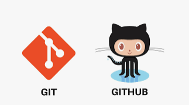

|
|
InicioObjetivosGenerales: Se desarrollara una pagina web por medio de lenguaje HTML 5 Y CSS la cual esta enfocada a ofrecer informacion acerca de el tema seleccionado "GIT Y GITHUB" donde encontraremos lecturas y contenido multimedia acerca de este tema. Especificos: TematicaGIT Y GITHUB:Git Hace referencia a un sistema de control con diferentes versiones, la cual nos permite hacer una copia del repositorio completo, tambien nos permite realizar seguimientos de los cambios realizados a dicho proyecto que estemos realizando lo cual nos muestra el cambio realizado a el proyecto. Github es un sitio web en la nube, el cual nos ayuda a los desarrolladores poder administrar el codigo, tambien que git nos permite realizar un seguimiento del registro y control de los cambios realizados en este codigo, ofrece la opcion para crear un repositorio el cual se recomienda para iniciar un nuevo desarrollo de un codigo y tambien para guardar un proyecto ya existente.  |